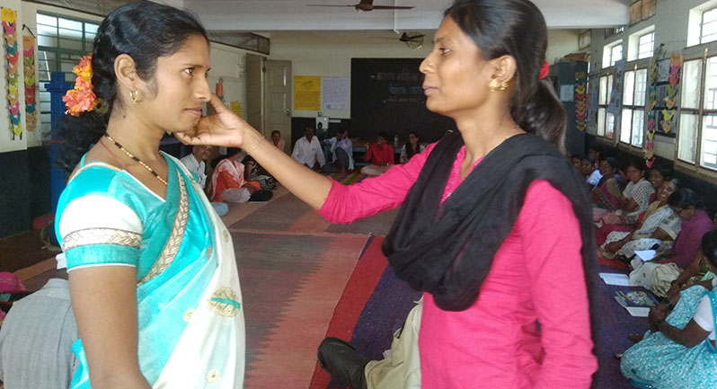

Right to Health
Jagruti has been working for proper health facilities in all government hospitals. The community submitted a memorandum to the MLA of Khanapur taluk urging him to bring in place a free medicine policy intervention. A public hearing was also organized at the Khanapur Taluka Government Hospital. Community members swept and cleaned the surroundings of the hospital as a protest and demanded for a clean hospital and streamlining the hospital services.
High rate of anaemia among pregnant women triggered an initiative for 'Save Mothers' campaign. Several trainings to detect pregnancies in risk were conducted. A public hearing was organized at Government Primary Health Centre at Bidi village for free distribution of ferrous sulphate tablets to pregnant women to reduce maternal mortality.
Training as a part of "Save Mothers" initiative.

Training the health trainers on how to recognize anemia.

A walk for affordable medicines.

"Healthcare is our right". A street drama in front of the Bidi village government hospital.